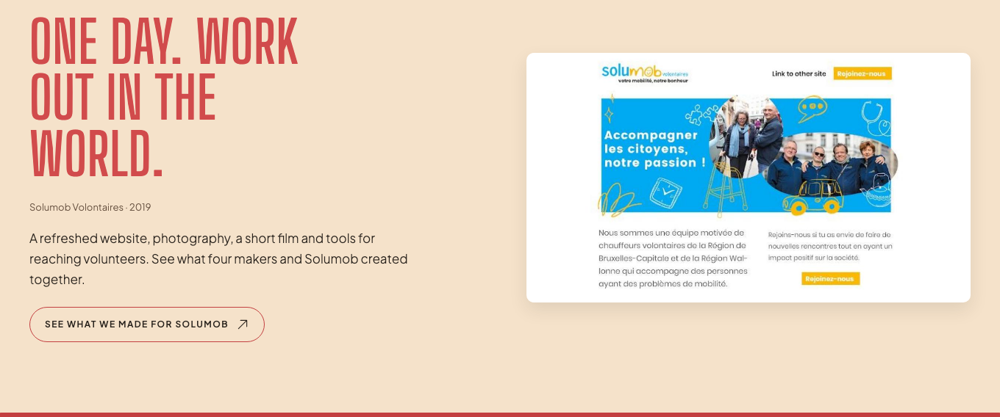
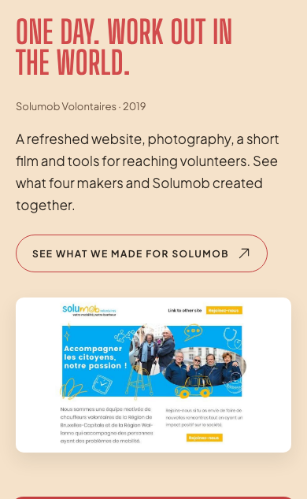
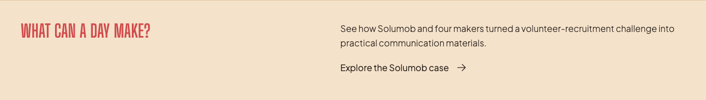
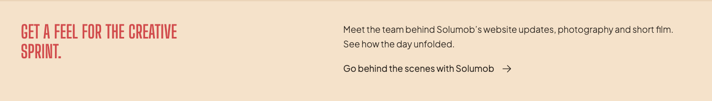
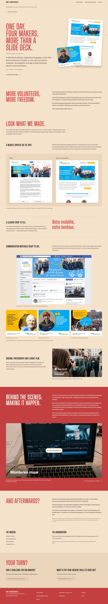

De Solumob-pagina is gebouwd, getest en gepubliceerd op de oude werkbranch. Daarna is main zonder die commit verder gegaan. Hieronder: wat er ligt en hoe het terugkomt op de site.
Op setup-cascade-digital-product, 19 oktober. Niet in main, niet in deze branch.
Pagina /case-studies/solumob, uitgelicht blok op de homepage, uitnodiging op /makers en /organisations.
Code past op 2 plekken niet meer: routes/web.php en audience.blade.php. De rest past schoon.
Eén pagina, drie ingangen. Nieuw is rood. De hoofdnavigatie blijft ongewijzigd, zoals in het goedgekeurde voorstel (P01, L01 tot L03).
Bron: docs/wiki/build/47-solumob-case-study.md in commit 6d53641 (te herstellen) en docs/ux/_structure.md (sitemap staat daar nog zonder deze pagina).
Schermafbeeldingen uit de oude verificatie (1440 en 390 px). Pixel-check op de huidige branch volgt na het invoegen.





Cherry-pick van 6d53641 op de huidige branch, daarna conflicten oplossen. Dit is de volgorde.
SolumobCaseStudy, CaseStudyPreviewController, config/case-studies.php, view, component, ~93 regels in app.css, test en preview-script komen schoon binnen.routes/web.php bouwt de sitemap nu uit Audiences::slugs(). De case-URL komt als extra item bij die collectie, niet als hardcoded string zoals in het oude commit.case-study-invitation kent alleen die twee. Sinds /volunteers bestaat zou die pagina anders de organisatietekst krijgen. Guard op $audience, of volunteers krijgt een eigen tekst (vraag 1).audience.blade.php. Tussen @include('audiences.'.$audience.'.sections') en #application. Het oude ankerpunt bestaat niet meer.AGENTS.md eist een goedgekeurde sitemap in docs/ux/_structure.md. De oude goedkeuring zit in Notion en docs/raw/2026-10-19-solumob-build-approval.md. Regel toevoegen en jij bevestigt.| Onderdeel | Status | Opmerking |
|---|---|---|
app/Content/SolumobCaseStudy.php, controller, config | schoon | Nieuwe bestanden, geen overlap. |
view, component, app.css, layout (canonical, og:type) | schoon | Layout-diff past nog (Fathom zat er al in). |
7 afbeeldingen, PDF, .lavish-bestanden | schoon | Raw-docs van de video-analyse staan al in main. |
home.blade.php | schoon | Eén regel na de evidence-sectie. |
routes/web.php | conflict | Audience-registry en nieuwe sitemap-generator. |
audience.blade.php | conflict | Pagina is herbouwd rond includes. |
| index, log, build-plan, concerns | conflict | Handmatig samenvoegen. |
CaseStudyPreviewTest | aanpassen | Controleert sitemap en volunteers-uitsluiting nog niet. |
Houd L01 tot L03 zoals goedgekeurd. Volunteers apart voorleggen als de rollen vaststaan.
Korte zin over foto, film en social media op de dag. Vraagt een extra goedkeuring van de sitemap.
solumob-case-study-koppelen), daarna als één curated commit naar main. Alternatief: de hele oude branch mergen is te breed (904 bestanden verschil).main nog "Partly" (rechten, originele bestanden, effect onbekend). Ik sluit B-036 niet zonder jouw bevestiging dat dit nog geldt.